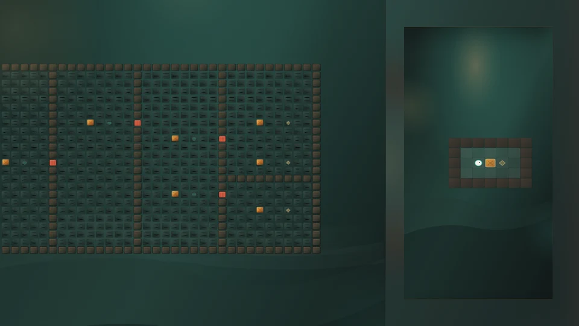

推箱子 · 地图解谜
第一关只推一下。第二关拉开一整张地图，门后还有门。

移动角色，把箱子推到目标格。第二关开场先扫过大地图，再回到角色身边。用箱子压住星钮开门，逐段打通路线，最后填满三个目标格。
公开关卡配置 ↗
第一关只摆一个箱子和一个落点。第二关开场扫过 38 × 24 格的地图，随后把视野拉回角色，让玩家知道终点在哪，也能专心处理面前的箱子。
机关箱留在星钮上，对应的门才会保持打开，终点则另有三个归位格。玩家需要先想清哪些箱子留在路上，哪些箱子送到终点。